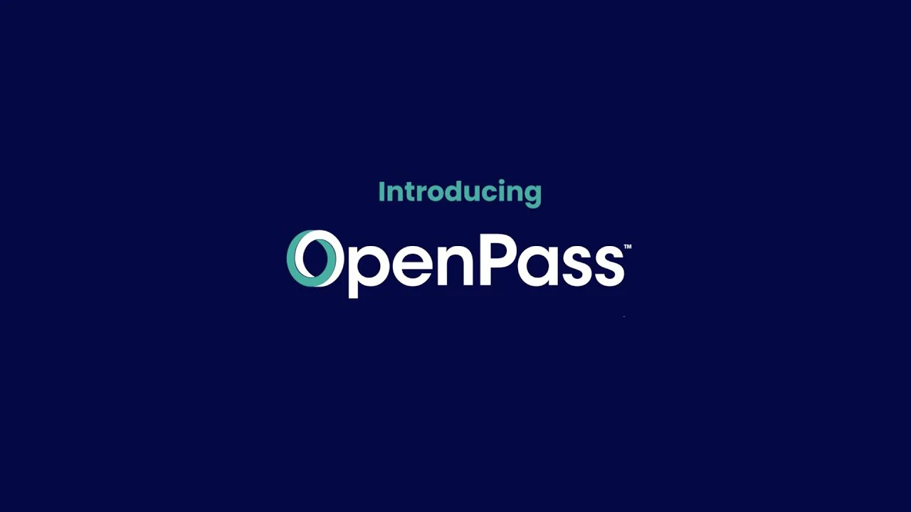
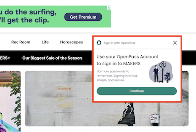
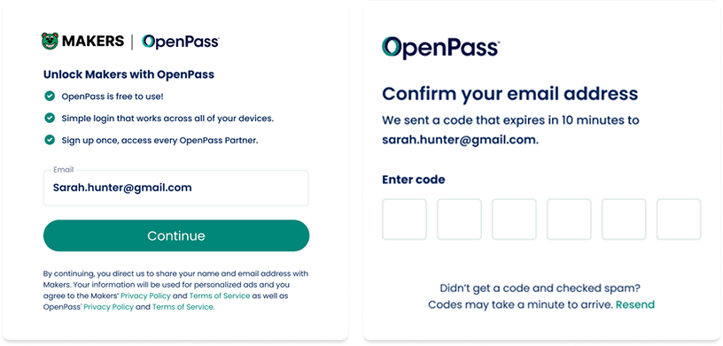
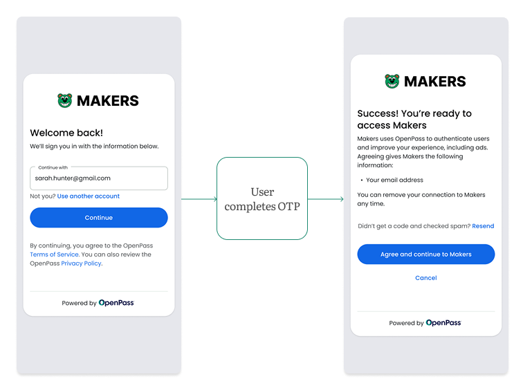

Designing trust into a consumer identity product

OpenPass is The Trade Desk's consumer authentication product, a privacy-focused single sign-on for the open internet. As the lead Staff Designer, I redesigned the sign-in experience around three core decisions: introducing a dedicated consent screen, neutralizing the OpenPass brand in favor of publisher trust signals, and designing partnership-flexible identity patterns that scale across publishers. Several of these proposals were initially deprioritized, then validated when the team discovered we were losing 75% of sessions without them. The work drove a 31% increase in new sign-ups, a 96.5% consent rate within 24 hours of the consent screen launch, and a 25x lift in sign-up and sign-in rates on co-branded publisher partnerships.
A trust-first design framework
When I joined the OpenPass team, the product was struggling: low adoption, wavering leadership confidence, an unfamiliar brand, and wildly inconsistent experiences across publishers. Despite significant organizational churn, I reframed how the team approached user trust with a framework that was consent-forward, publisher-co-branded, and partnership-flexible. That framework continues to shape the product today.
Project outcomes
31% increase in new sign-ups across the product after the new design framework launched.
96.5% user consent rate within 24 hours of the dedicated consent screen launch.
25x lift in sign-up and sign-in rates on Ultimate Guitar's co-branded experience.
25% reduction in session loss after previously deprioritized UX proposals were implemented.
A flexible identity pattern that scales across publisher partnerships with different constraints.
OpenPass and the open internet
With third-party cookies going away and privacy legislation tightening, the open internet's advertising model increasingly depends on consumers being willing to authenticate. OpenPass provides a privacy-focused SSO experience that gives consumers transparent control over their identity while enabling publishers to maintain the ad relevance their businesses depend on.

An unknown brand asking for trust
OpenPass launched in 2023 as an unfamiliar brand to the general public. Only 5% of website visitors clicked the sign-up button, and of those, only about 20% completed the flow. Users didn't understand what OpenPass was. They expected to set up a password, not realizing it was a one-time-password SSO.

The original OpenPass sign-in screenLow sign-up rates and high drop-off
The sign-in screen promoted the OpenPass brand and highlighted vague benefits ("it's free!") while burying the value proposition. We were also the only SSO that mentioned "personalized advertising" in our terms, language that research showed frustrated users.
Inconsistent experiences across publishers
There was no consistent experience for how users accessed OpenPass across our publisher network. Styling, copy, and authentication methods all varied. This inconsistency eroded trust, brand recognition, and legitimacy.
Wary leadership confidence
Executive confidence was inconsistent. Leadership consistently pushed to cut steps and clicks, assuming less friction would mean higher conversion.
A misframed design question
The team was treating this as a friction problem when it was really a trust problem. Industry research showed 86% of users are bothered by creating new accounts, but leading SSOs solve this by framing sign-in as "Continue to Site." The real question wasn't "how do we reduce friction?" It was "why should I trust this brand with my information?"
Decision 1: Designing consent into the sign-in flow
Leadership consistently asked to cut steps and clicks. But users were dropping off because the sign-in screen included dense legal copy disclosing how OpenPass authenticated users and what publishers would receive. Partners wanted us to truncate the copy, but that would erode the consent and transparency the product depended on.
After back-and-forth with Legal, I proposed an alternative: instead of compressing the legal text, introduce a dedicated consent screen after OTP authentication. I also ensured the entire flow was responsive-friendly, since 45% of OpenPass users were on mobile. This added a step, but shifted the design from "users skip through legal text" to "users make an explicit consent decision."

The dedicated consent screen, introduced after OTP authenticationThe outcome
Within 24 hours, 96.5% of users consented after completing OTP authentication. The result resolved the internal debate about whether to cut steps.
This wasn't the first time I'd advocated for changes to the flow. Earlier in 2024, several of my UX proposals were deprioritized for launch. After shipping without them, the team discovered we were losing approximately 75% of sessions. Once implemented, session loss decreased by 25%.
Decision 2: Neutralizing the OpenPass brand to amplify publisher trust
Users were accessing content from publishers they knew: a music site, a real estate platform, a media brand. It was the OpenPass brand that was unfamiliar.

The original sign-in gave OpenPass and the publisher roughly equal visual weight, creating cognitive friction at the moment of trust. Data confirmed this: the in-line experience, where OpenPass was barely visible, had 50% of users completing the funnel. The publisher-first approach felt natural; the OpenPass-branded approach felt like a detour.
Working closely with our UX VP, I neutralized the OpenPass visual identity to lean on the trust already established with the publisher's branding.
The new pattern
- Publisher branding and color palette take primary visual weight
- OpenPass reduces to a "Powered by OpenPass" label
- Standard, universally understood CTAs replace OpenPass-branded styling
- The publisher's logo anchors the experience
The validation
We tested a co-branded flow with Ultimate Guitar, a major music publisher. The result: a 25x lift in sign-up and sign-in rates compared to the original design. A senior product leader responded: "This shows we have a brand and trust problem, not a product problem." That reframe became the guiding principle moving forward.
 Ultimate Guitar's co-branded OpenPass sign-in flow
Ultimate Guitar's co-branded OpenPass sign-in flow
Decision 3: Designing partnership-flexible identity patterns
OpenPass's value depends on broad publisher adoption, which means designing patterns that work across many partner contexts with different constraints: existing user bases, legacy auth flows, brand guidelines, and varying tolerance for change.
The Zillow migration

Zillow wanted minimum changes to their existing sign-in experience, but their users still needed to understand what they were agreeing to when migrated to OpenPass. I designed a flexible pattern that respected both constraints:
- Users sign in to Zillow as usual with their existing password
- Non-migrated users see a combined OTP-and-consent modal
- Already-migrated users sign in via OTP without re-consenting
This pattern became a template for similar partnerships, giving OpenPass a system for handling the messy middle of identity migration while maintaining a consistent trust framework across every integration.
Consumer authentication is a trust problem dressed as a UX problem.
The 96.5% consent rate after adding a step validated that users will engage with identity systems when those systems are honest about what they're asking for. Trust is built by giving users meaningful agency, not by removing the moments where that agency would be exercised.
Sometimes the right design move is to take up less space.
Giving up OpenPass's brand visibility to amplify the publisher's was counterintuitive, but the 25x lift on Ultimate Guitar's co-branded experience showed how much that single reframe was worth.
Advocating for users sometimes means being patient with the organization.
When my UX proposals were deprioritized, I documented the rationale, kept the work ready, and let the data make the case when the team saw 75% session loss. I also learned to bring team leads into conversations earlier and ensure other UX functions (research, writing) were included in product strategy discussions where they'd previously been left out.